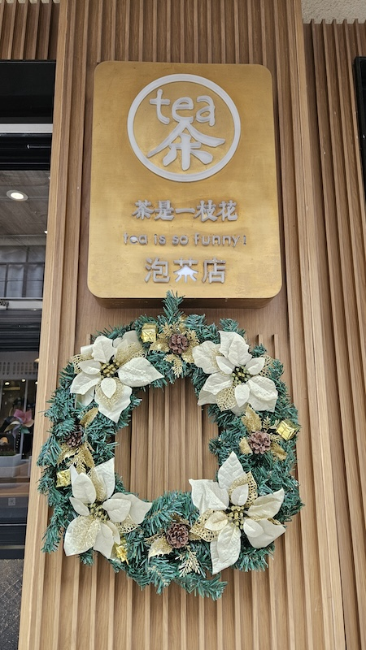
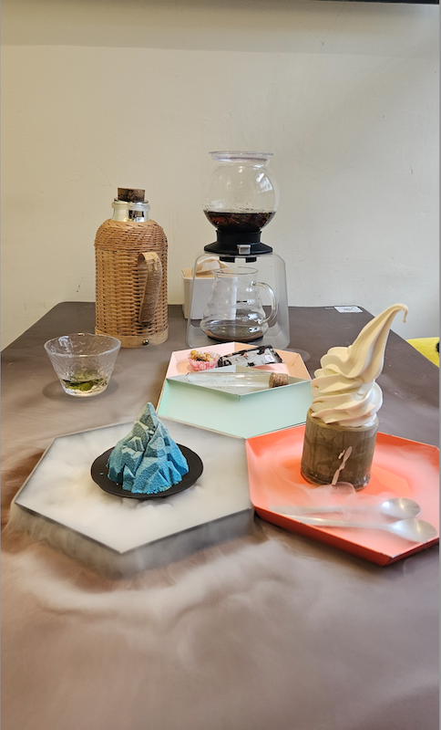
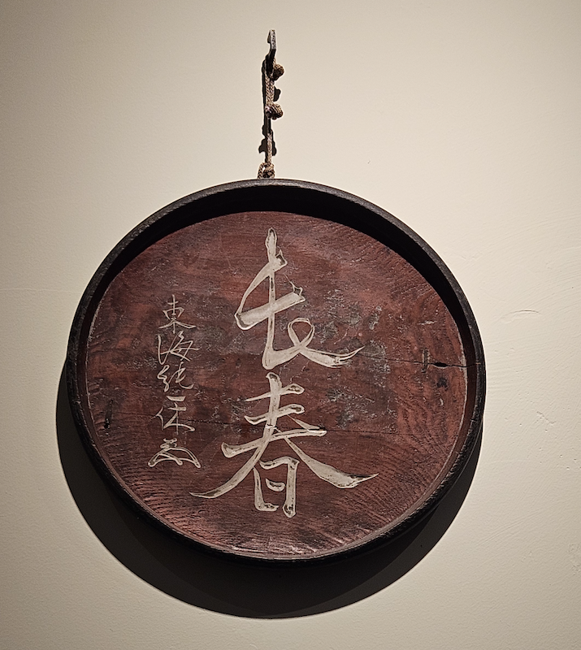

2024-12-30 缓解去东北的焦虑
目录
虽然今天是个工作日，但是我裸辞了，吞吞休年假。我们约好今天一起喝下午茶，好好放松一下。
这次我提前做了功课，选的店是《好东西》导演邵艺辉推荐的一家店，叫“茶是一枝花”。听说这家店的环境很雅致，茶点也很有特色，特别适合悠闲的下午时光。
来到永康路，道路两旁的梧桐树叶已经枯黄，却还挂在枝头，给人一种还不到深冬的感觉。不像浦东的梧桐树，早就光秃秃的了。永康路上的店铺都很精致。我一边走，一边欣赏着沿街的风景，心情也变得轻松起来。
低头看了看高德地图，地图显示到目的地了。我停下一看，嗯，这家店木质的装修看起来很高雅，透过玻璃窗还能看到里面坐了不少顾客，应该就是“茶是一枝花”了。
于是我推门进去，门口有一个展示柜，里面摆满了精致的糕点，服务员站在后面微笑着迎接我。我礼貌地问道：“你好，两个人，没有预约，有位置吗？”服务员回答说：“不好意思，今天我们清仓，店里都坐满了。” 我没反应过来，清仓？
于是我继续问道：“清仓？你们不开了吗？”店员解释道：“不是不开了，是要搬走了，在其他地方新开了一家。”我有些遗憾，刚来这家店就要关闭了，真是运气不佳。我满脸遗憾地站在那里，犹豫着是不是去这条路上再找一家。
“我们的椅子都卖掉了，会有人随时来取，所以没有多余的座位了。如果你不介意的话，可以把蛋糕打包带走。”服务员补充了一句。我愣了一下，蛋糕？等等，这是蛋糕店？我有些困惑地问她：“你们是茶店吗？”她摇了摇头，笑着说：“茶店在隔壁。”“那你们是什么店？”我追问。店主走了过来，有些不耐烦地回答：“我们是武康路56号蛋糕店。”我这才意识到自己走错了地方，有些尴尬地笑了笑：“嘿嘿，不好意思，我走错了。”
（回头我查了一下这个蛋糕店，确实是比较有名的店铺。）
我走出店门，继续往前走。这次我仔细看了看招牌，没错，就是“茶是一枝花”。我推开门，没有过多的装饰，很清爽的一家店，店里两个服务员，有一桌客人正在说要一个冰淇淋。
 我找了个靠窗的位置坐下，说我在等朋友，然后扫码开始看菜单。服务员端上来了一杯薄荷水。这家店的菜单设计得很有趣，不仅有各种茶饮，还有不少创意甜点。
没过多久，吞吞就到了。我们转移到里面的一个小房间，从窗户可以看到来往的行人。我们点了一个套餐，有茶，有冰淇淋，还有甜点。
服务员把水倒在转折白色卵石的盘子里，顿时一股仙气冒出来。这家店还是蛮有花头的。蓝色的巧克力里面是秋冬厚重的榛子坚果口味。冰淇淋有好几个口味层次，太好吃了。茶的话感觉一般般，没有自己泡的好喝。

我告诉她我裸辞了，她倒是很赞同，说休息休息没什么不好。
提到之后的打算，我说打算下周和家人去东北玩一趟，主要是长春、延吉和长白山。不过，现在我比较苦恼的是，网上攻略都说东北很冷，要穿很厚的羽绒服。可我这几天跑了好几次第一八佰伴，都没买到合适的。波司登超过200克的羽绒服都是180的尺码，我在另一家店看到尺码合适的，克重也符合，但不是防风面料，感觉会透风，也没买，所以有些焦虑。
吞吞听了我的烦恼，笑着说：“我去年过年没有回家，跟着稻草人去了一趟哈尔滨和漠河。我有去东北的全套装备，如果需要的话，可以直接去我家拿。” 我听了之后，眼睛都亮了起来，连连点头：“那当然太好了！”于是，她给我提供了充绒300克的防风防雨羽绒服、加绒冲锋裤、在漠河买的巨防风帽子、能玩手机的手套、能玩雪的手套、毛毛耳套，甚至还要把她的暖宝宝送给我，还给我发了速干羊毛打底衣的链接。
我感慨万分，苍天啊，我为什么总能遇上这么好的朋友？我真的特别幸运。昨天晚上还在愁，我买的冲锋裤不加绒，是不是要穿东北大棉裤，或者内蒙古的驼羊毛棉裤，万一走不动路怎么办？从她家搬出这一套装备后，我其实不需要再买什么其他的东西了。
（特别巧的是，我们坐的小房间挂着“长春”的装饰）  有了这些装备，后续的旅行非常完美。天池的票难订是一方面，当天能不能开放也要看老天爷的心情。结果我去的那天，天气晴朗，微风拂面，天池顶上一点都不冷。老里克湖的童话冰雪天地，那里的徒步经历让我难忘，仿佛置身于冰雪圣境，每一步都充满了惊喜。而《盗墓笔记》的十年之约，在2025年的伊始，我也算是完美完成了。
这次旅行真的很完美，谢谢朋友的温暖和大自然的美丽。